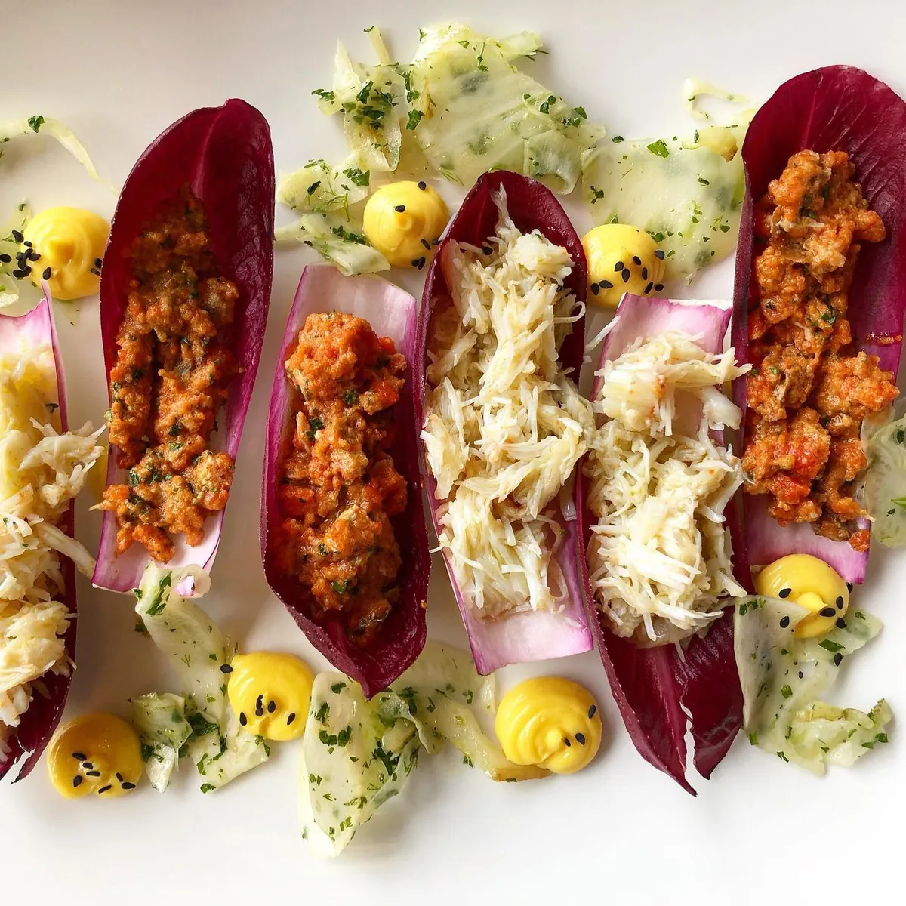
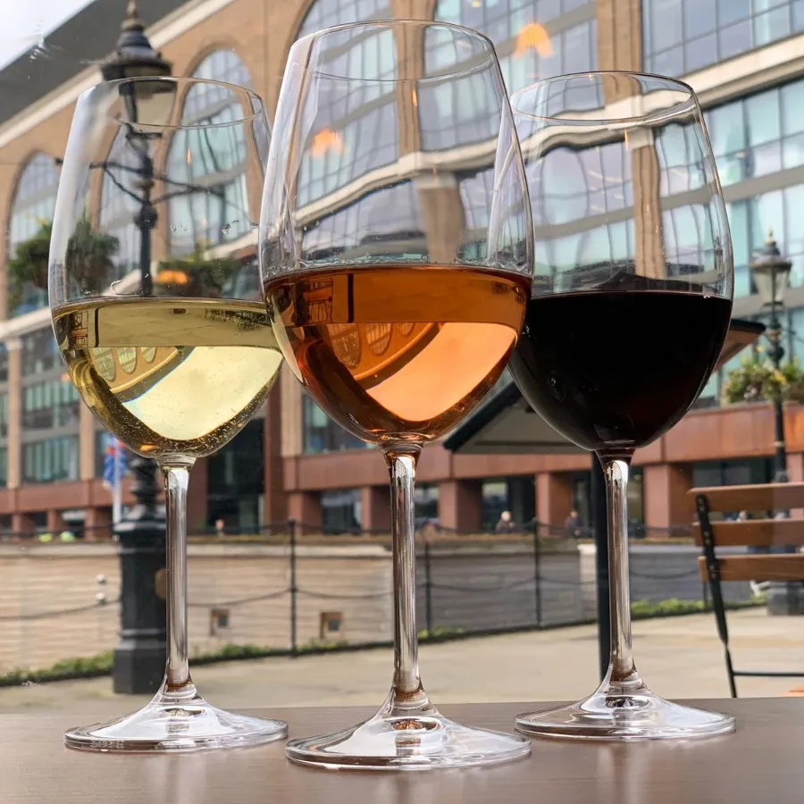
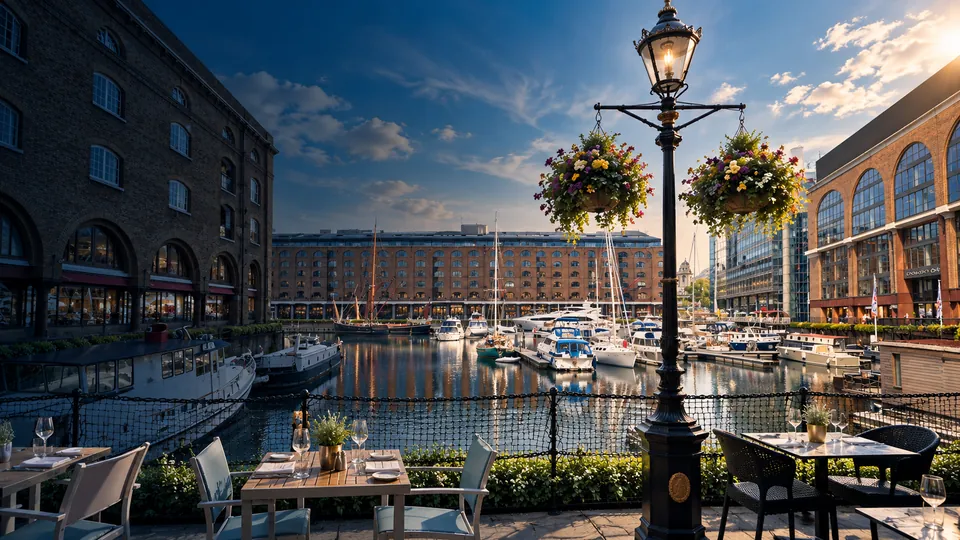
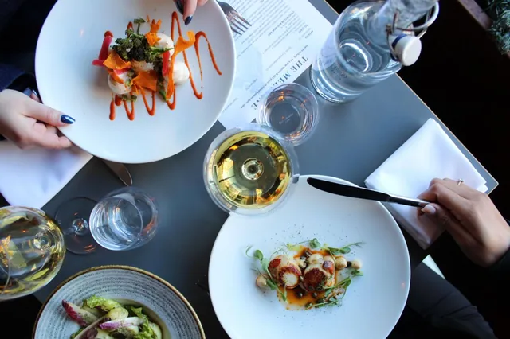
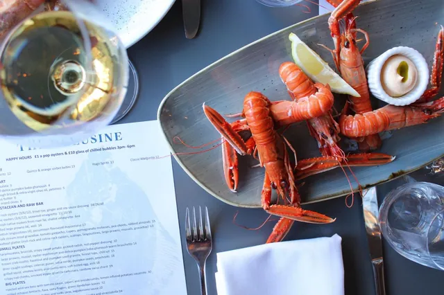
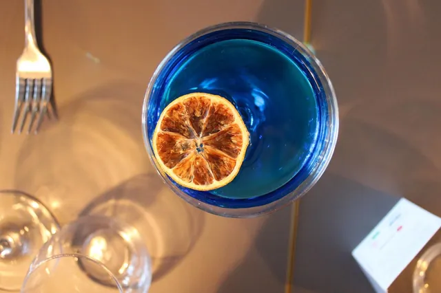

About us
A place to
come together.
Seasonal seafood, personal hospitality and a dining room beside the water at St Katharine Docks.
Our story
Since
December 2019.
The Melusine opened in December 2019, led by chef Theodore Kyriakou, with a simple idea: to bring people together over exceptional seafood in a relaxed, personal setting.
It’s a small restaurant, and we like it that way. An intimate dining room means we can look after every table properly, whether you’re in for a quick lunch or staying for another bottle.

Our food
Led by the sea
and the seasons.
Our menu changes with the fish and shellfish available from our suppliers, and with the produce at its best that season. Vegetables, dressings and everything alongside the seafood receive the same care.
Many dishes are made for sharing: order a few, pass them round and settle in.
View the menu →
Our name & our home
Named for
a water spirit.
Our name comes from Mélusine, a water spirit from medieval European folklore, reflecting our connection to the water and the stories surrounding it.
You’ll find us on the ground floor of Ivory House, beside the water at St Katharine Docks, a few minutes’ walk from the Tower of London and Tower Bridge.
Opening hours & directions →
Gallery
The Melusine
in pictures.

By the water 
Around the table 
Seasonal seafood 
Drinks at The Melusine